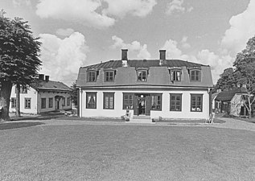
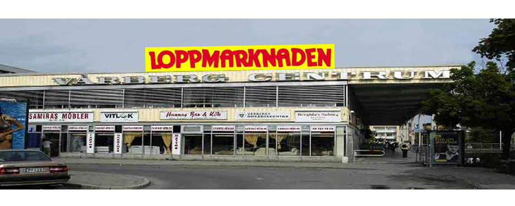

HITTA HIT SERVICE HISTORIA NÖJE NATUR
Historia
Vårberg är en stadsdel i söderort och var engång en del av vårby huddinge kommun. arealen är 194 hektar land och 65 hektar vatten. namnet vårberg kommer ifrån vikingatidens ord "vikingaberget"
År 1964 så böjade man bygga och 4 år senare var nästan hela stadsdelen färdigställd.
☝️Natur
 Johannesdal är den västligaste delen av Vårberg i stockholms kommun. området gränser till mälaren. johannesdal gård vid petersens väg 14 är ett kulturminne och enda privatägda område i Vårberg.Området har sitt namn efter Johannesdal gård, vilken uppfördes kring år 1790 som sommarnöje för sidenvävaren jakob jakobsson.
År 1939 styckade den dåvarande ägaren arvid heidig upp gårdens mark i 140. sportstugetomter vilka bebyggdes under de följande åren.
☝️Nöje

I hela distriktskommittéområdet finns mer än 120 ideella föreningar och i vårberg-distriktet finns det många föreningar främst för barn och ungdomar.
Andra ideella föreningar som finns i vårberg inkluderar vårberg , vårberg Shipyard Interests Association och Night Walk Sätra (Night Walk vårberg) .
Parkar, stränder och sportsområden finns det gott om i Sätra. Det finns en fotbollsplan, ridplats, flera basketplan och Sätra IP som är en dedikerad byggnad åt sport.
Den kallas för vårberg IP och har allt från hockeyhallar, fotbollsplaner och löparbanor både inomhus och utomhus.
☝️Service
 Innan stadsdelen vårberg började bebyggas var vårberg varv, Kungshatts tegelbruk och i viss utsträckning jordbruket det som gav arbetstillfällen i Sätra. I generalplanen för Sätra från 1962 utpekades ett område som skulle disponeras för arbetsändamål.Området lades som en buffert mellan Södertäljevägen och bostadsbebyggelsen och fick gångavstånd till Stadsplaner upprättades 1967 för fastigheterna vårberg och Lillsätra och 1974 för Stensätra samt Hällsätra.
- Scanreco
- Flinks
- Återvinningscentral
- Bilbesiktning